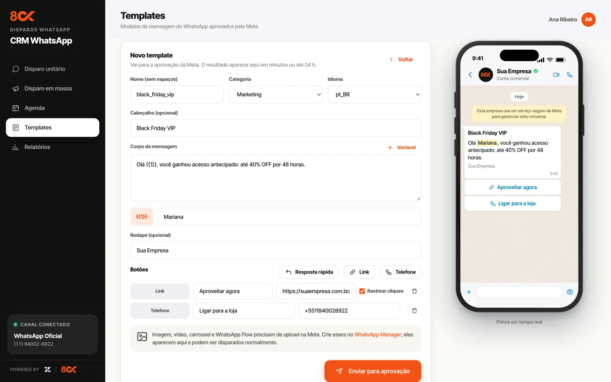
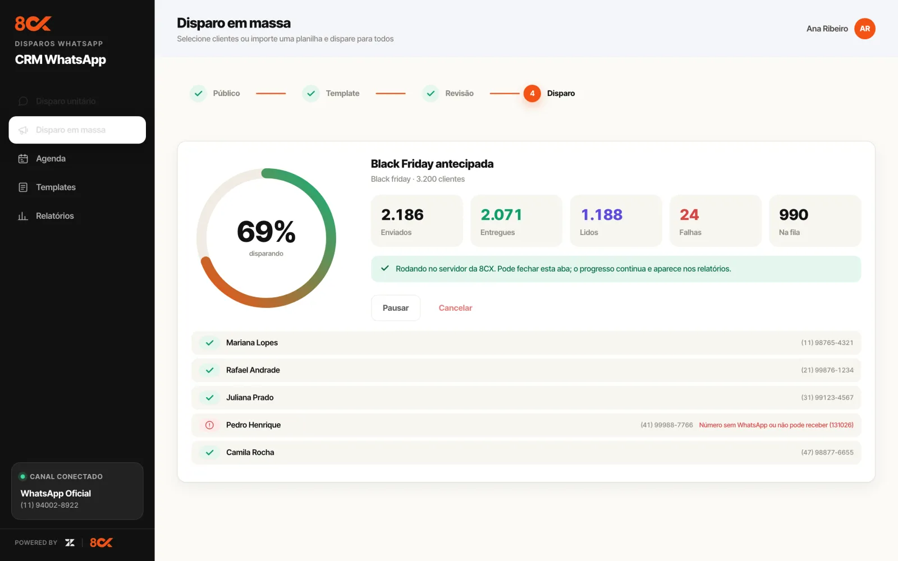
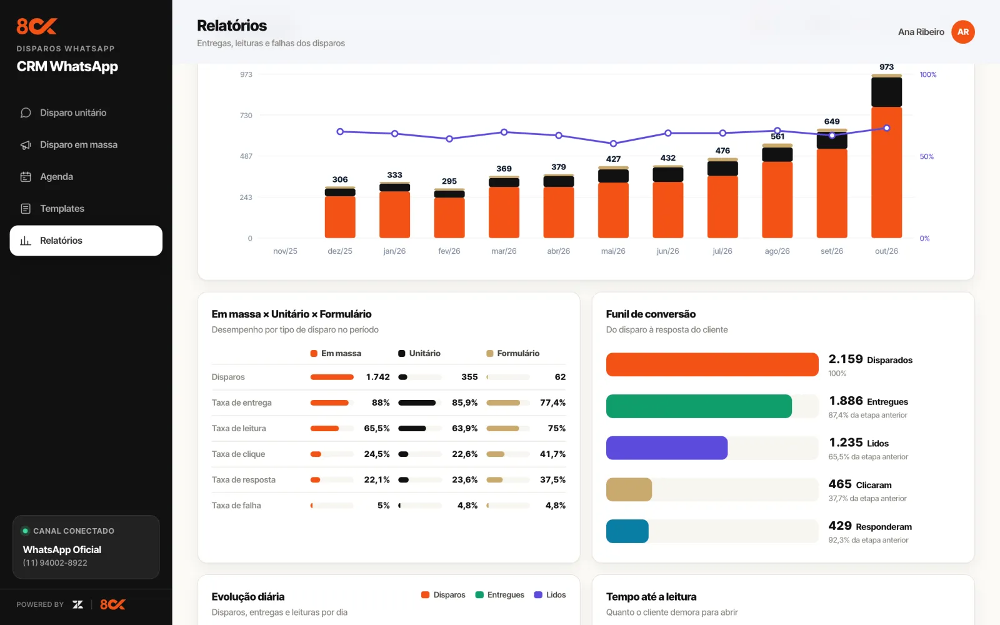
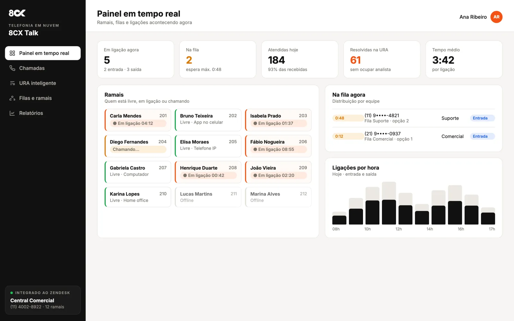

8CX CRM
Envie WhatsApp e e-mail para um cliente ou para milhares, direto do Zendesk. Agende campanhas num calendário, crie templates de WhatsApp sem sair do app e veja a resposta do cliente cair no ticket.

Programe, reagende e cancele envios num calendário
Crie o template e envie para aprovação pelo app
Do envio para um cliente à campanha em massa
Das respostas registradas na conversa do cliente
Disparo de WhatsApp e e-mail pelo Zendesk, com agenda e templates.
A campanha sai na hora certa, sem ninguém de plantão.
Programe envios unitários e em massa num calendário por dia, semana ou mês. Arraste para reagendar. O disparo roda no servidor: pode fechar a aba.
- Visão de dia, semana útil, semana e mês
- Arraste para mudar o horário
- Envio unitário imediato ou agendado
- Status de cada envio: agendado, disparado ou cancelado
Do rascunho à aprovação da Meta, sem sair do Zendesk.
Monte o template com cabeçalho, variáveis, rodapé e botões, veja a prévia no celular e envie para aprovação. O status aparece no app.
- Prévia em tempo real como o cliente vai ver
- Variáveis, botões de link, resposta rápida e telefone
- Rastreio de cliques por destinatário
- Carrossel, mídia e WhatsApp Flows suportados

Uma planilha e a campanha está no ar.
Importe a lista em Excel ou escolha clientes do Zendesk, com variáveis por linha. Acompanhe enviados, entregues, lidos e falhas enquanto o disparo acontece.
- Importação com validação de telefone
- Tag aplicada ao cliente depois do envio
- Progresso em tempo real
- Números sem WhatsApp apontados na hora

Saiba o que funcionou.
Entregas, leituras, cliques e respostas por campanha, template, agente e região, com funil de conversão e comparação entre envio em massa e unitário.
- Funil: disparados, entregues, lidos, clicaram, responderam
- Comparativo massa × unitário
- Tempo até a leitura e melhor horário
- Exportação em CSV

Disparo unitário
Busque o cliente no Zendesk e envie com as variáveis preenchidas.
WhatsApp e e-mail
Os dois canais numa só ferramenta.
Resposta no ticket
O que o cliente responde cai na conversa do Zendesk.
Janela de 24 horas
O app valida antes de enviar.
Formulário nativo
Respostas de formulário registradas na conversa.
Multi-número
Escolha de qual número do WhatsApp sai cada envio.
A 8CX instala, configura e acompanha.
Conversa
Entendemos a sua operação e mostramos o 8CX CRM funcionando com dados de exemplo.
Implantação
Instalamos o app no seu Zendesk e configuramos as regras com o seu time.
Hypercare
Duas semanas de acompanhamento depois do go-live para ajustar o que for preciso.
Vamos conversar sobre o 8CX CRM?
Clique e fale com a 8CX no WhatsApp. A mensagem já vai escrita:
“Olá! Vim do site da 8CX e queria saber mais sobre o 8CX CRM.”conversa ↗

NPS 8CX ↗
Pesquisa de NPS automática por e-mail ou WhatsApp, com a nota de volta no ticket.

8CX Talk ↗
Telefonia em nuvem com URA inteligente, gravação e transcrição por IA.

8CX Produtividade ↗
Produtividade, CSAT, SLA e disponibilidade de cada agente em tempo real.

8CX Quick ↗
Busca avançada, ações em massa, alertas e lembretes para o agente render mais.